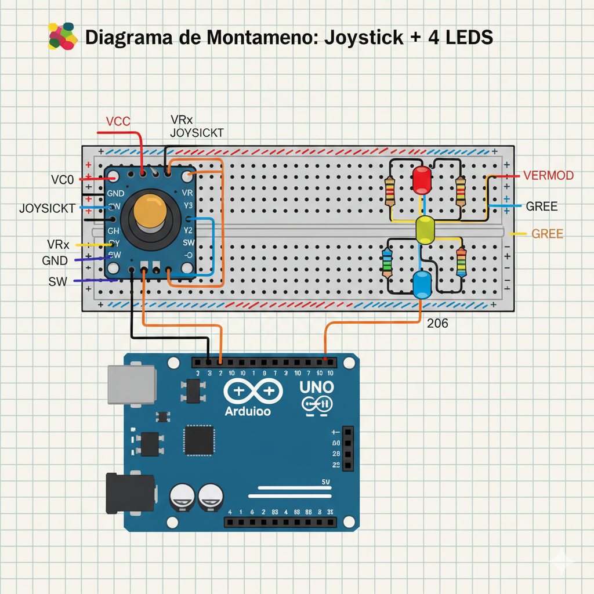

1. Nome do Projeto
Controle de Brilho de 4 LEDs via Joystick (PWM)
2. Descrição do Projeto
a) Motivação, Objetivo e Contextualização
Motivação: Explorar a interface homem-máquina e a manipulação de sinais analógicos e digitais. O joystick é um periférico comum em sistemas de controle, e este projeto oferece uma introdução prática à leitura de eixos e ao controle de potência de saída.
Objetivo: O projeto visa construir um sistema onde o deslocamento do joystick nos eixos X (horizontal) e Y (vertical) controle o brilho de quatro LEDs dedicados (Cima, Baixo, Esquerda, Direita). O botão do joystick deve ligar todos os LEDs no brilho máximo.
Contextualização: Este projeto aplica conceitos fundamentais de Sistemas Digitais e Eletrônica Analógica. Ele demonstra a conversão de um sinal analógico (`analogRead`) em um valor digital de controle (`map`) e o uso da Modulação por Largura de Pulso (PWM) via `analogWrite` para simular uma saída analógica (o brilho do LED).
b) Fluxo de Dados e Arquitetura
O sistema é dividido em três blocos principais: Entrada Analógica e Digital (Joystick), Processamento (Arduino) e Saída PWM (LEDs).
Joystick (VRx/VRy) -> analogRead -> map(0-1023 -> 0-255)
Joystick (SW) -> digitalRead -> Condicional (Botão)
Processamento -> analogWrite -> LEDs (Brilho Variável)
Diagrama de Blocos do Controle Interativo.
3. Palavras-chave
4. Autores


5. Componentes e Suprimentos
| Componente | Quantidade | Descrição Detalhada |
|---|---|---|
| BlackBoard | 1 | Microcontrolador principal. Lê os sinais analógicos e digitais do Joystick. |
| Módulo Joystick (KY-023) | 1 | Dispositivo de entrada com 2 eixos analógicos (VRx/VRy) e 1 botão digital (SW). |
| LED (Diodo Emissor de Luz) | 4 | Saídas visuais. Controladas via Modulação por Largura de Pulso (PWM). |
| Resistor de Filme de Carbono | 4x 220 Ω | Resistor limitador de corrente, essencial para proteger os LEDs e os pinos PWM do Arduino. |
6. Aplicativos e Plataforma
- Arduino IDE v2.3.2
- Fritzing (Software de Diagramação) v0.9.9
- Monitor Serial do Arduino Debugging
7. Passo a passo: Montagem do Projeto
Siga o diagrama de conexões e os passos abaixo para montar o circuito. Utilize os pinos PWM (6, 9, 10, 11) para os LEDs e os pinos analógicos (A0, A1) para o Joystick.
Diagrama do Protótipo
Esquema Fritzing do Joystick conectado a 4 LEDs via pinos PWM.
Passo 1: Alimentação e Botão do Joystick
Conecte o pino VCC do Joystick ao 5V do Arduino e o pino GND ao GND do Arduino. Conecte o pino do botão (SW) ao pino digital D2.
Passo 2: Conexão dos Eixos Analógicos
Conecte o pino do eixo vertical (VRy) ao pino analógico A1 (`yPin`) e o pino do eixo horizontal (VRx) ao pino analógico A0 (`xPin`).
Passo 3: LEDs de Saída e Pinos PWM
Para cada LED (4 no total), conecte o cátodo (perna curta) ao GND e o ânodo (perna longa) a um resistor de $220 \Omega$. Em seguida, ligue o resistor ao pino PWM correspondente no Arduino:
- LED Cima (`upLed`): D10
- LED Baixo (`downLed`): D9
- LED Esquerda (`leftLed`): D11
- LED Direita (`rightLed`): D6
8. Código Arduino Completo (Controle PWM)
Este é o código completo que realiza a leitura dos eixos analógicos, faz o mapeamento para brilho (0-255) e controla a saída PWM dos LEDs. O botão acende todos os LEDs em brilho máximo.
// 1. Variáveis de Mapeamento de Pinos
int xPin = A0; // Pino Analógico para o Eixo X do Joystick
int yPin = A1; // Pino Analógico para o Eixo Y do Joystick
int buttonPin = 2; // Pino Digital para o Botão do Joystick
// 2. Variáveis de Leitura de Valores
int xVal; // Valor lido do Eixo X (0-1023)
int yVal; // Valor lido do Eixo Y (0-1023)
int buttonState; // Estado lido do Botão (HIGH ou LOW)
// 3. Variáveis de Controle de LED (Pinos PWM no UNO)
int upLed = 10;
int downLed = 9;
int leftLed = 11;
int rightLed = 6;
// 4. Variáveis de Brilho (PWM)
int upBrightness = 0;
int downBrightness = 0;
int leftBrightness = 0;
int rightBrightness = 0;
// =================================================================
void setup() {
// Inicializa a comunicação serial para depuração
Serial.begin(9600);
// Configura os pinos do joystick como ENTRADA
pinMode(xPin, INPUT);
pinMode(yPin, INPUT);
// Pino do botão com resistor pull-up interno
pinMode(buttonPin, INPUT_PULLUP);
// Configura os pinos dos LEDs como SAÍDA
pinMode(upLed, OUTPUT);
pinMode(downLed, OUTPUT);
pinMode(leftLed, OUTPUT);
pinMode(rightLed, OUTPUT);
}
// =================================================================
void loop() {
// Leitura dos Valores Atuais
xVal = analogRead(xPin);
yVal = analogRead(yPin);
buttonState = digitalRead(buttonPin);
// Mapeamento dos Valores para Brilho (0-255)
// 489 (Y) e 511 (X) são os valores centrais do joystick em repouso.
// Eixo Y
upBrightness = map(yVal, 489, 0, 0, 255);
downBrightness = map(yVal, 489, 1023, 0, 255);
// Eixo X
leftBrightness = map(xVal, 511, 0, 0, 255);
rightBrightness = map(xVal, 511, 1023, 0, 255);
// 🕹️ Controle de Brilho (PWM)
// Eixo Y
if (yVal <= 489) { // Se for movido para CIMA
analogWrite(upLed, upBrightness);
}
if (yVal >= 489) { // Se for movido para BAIXO
analogWrite(downLed, downBrightness);
}
// Eixo X
if (xVal <= 511) { // Se for movido para ESQUERDA
analogWrite(leftLed, leftBrightness);
}
// Eixo X
if (xVal >= 511) { // Se for movido para DIREITA
analogWrite(rightLed, rightBrightness);
}
// 🚨 Controle do Botão (Acende todos os LEDs com brilho MÁXIMO)
// PULLUP ativo: LOW significa pressionado.
if (buttonState == LOW) {
digitalWrite(upLed, HIGH);
digitalWrite(downLed, HIGH);
digitalWrite(leftLed, HIGH);
digitalWrite(rightLed, HIGH);
}
}
Este código está pronto para ser copiado e carregado no seu Arduino IDE.
9. Download do Projeto Completo (.zip)
Baixe o arquivo .zip que contém o código-fonte, esquemas de montagem e instruções detalhadas para replicar o projeto.
Baixar10. Vídeo de Demonstração e Tutorial
Assista ao nosso vídeo de demonstração, onde mostramos o Controle de LEDs via Joystick em funcionamento.
11. Lições Aprendidas
a) Desafio do Ponto de Repouso (Centro)
- O que deu errado? O joystick não retornava um valor perfeito (ex: 512) quando estava parado, mas sim valores próximos (489 e 511). Isso causava um leve acendimento de LEDs mesmo em repouso.
- Como foi resolvido? Calibramos o ponto de repouso usando os valores experimentais (489 para Y e 511 para X) diretamente na função `map()` e nas condicionais (`if`), garantindo que o brilho comece em 0 no centro.
b) Conclusões e Melhores Práticas
- Calibração de Sensores: A leitura de sensores analógicos requer calibração empírica. É crucial testar o dispositivo para determinar seus valores reais de limite.
- Uso Eficiente do `map()`: A função `map()` se provou fundamental para traduzir a amplitude de 10 bits (0-1023) do ADC para a amplitude de 8 bits (0-255) do PWM.
- Digital vs. Analógico (PWM): O projeto reforça a diferença entre `digitalWrite` (ON/OFF) e `analogWrite` (controle de potência via PWM).